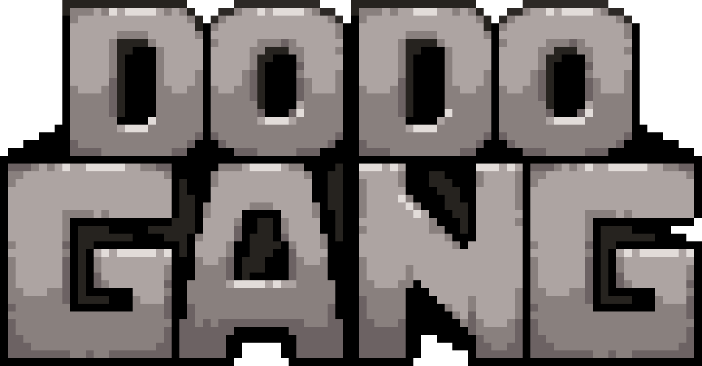
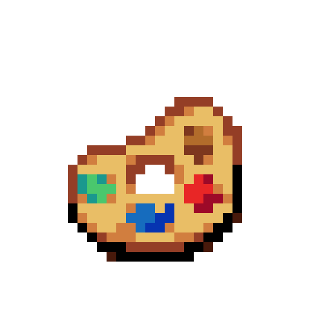

Whom Bequeath Thou Qbert?
I am a artist who does mostly minecraft art. as well as diving into other art types such as modeling and concept art.

Dodo Gang is a modding team started by Me and Trikzon in the later months of 2020. Releasing our first mod crumbs around then. Soon expanding our horizons to even more projects with a vast amount of more members following

Artist refuge is a Discord server where various artists can post their artworks for other to enjoy with their eyeballs looking at